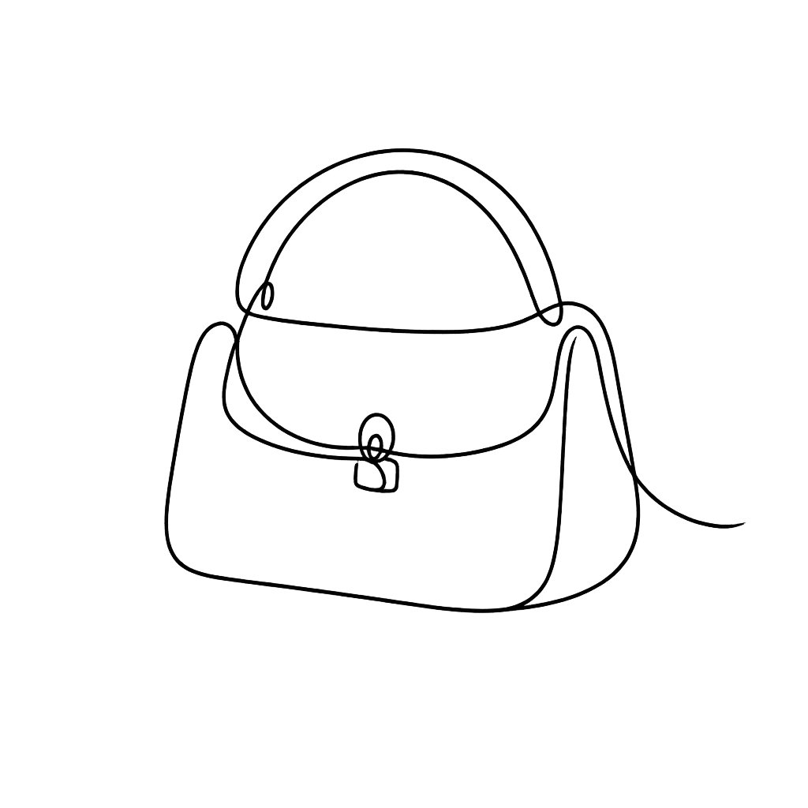
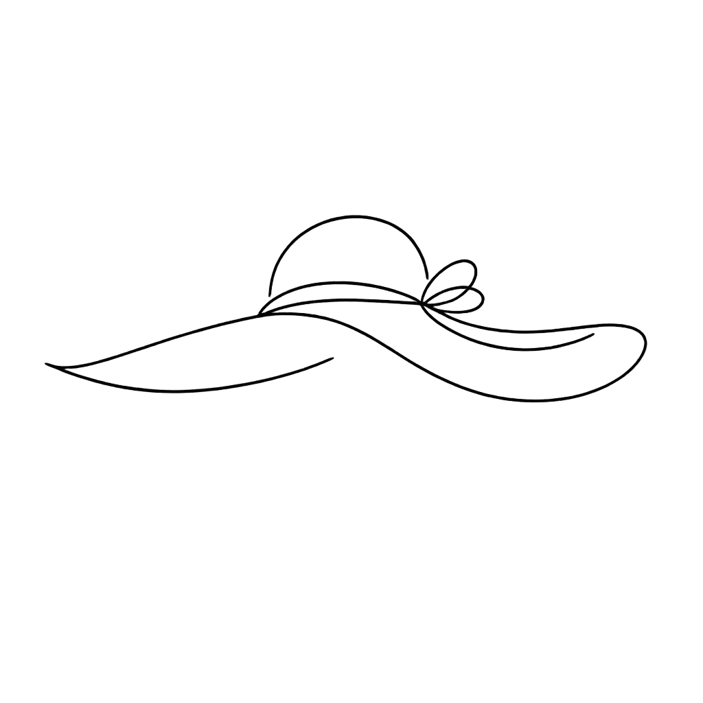
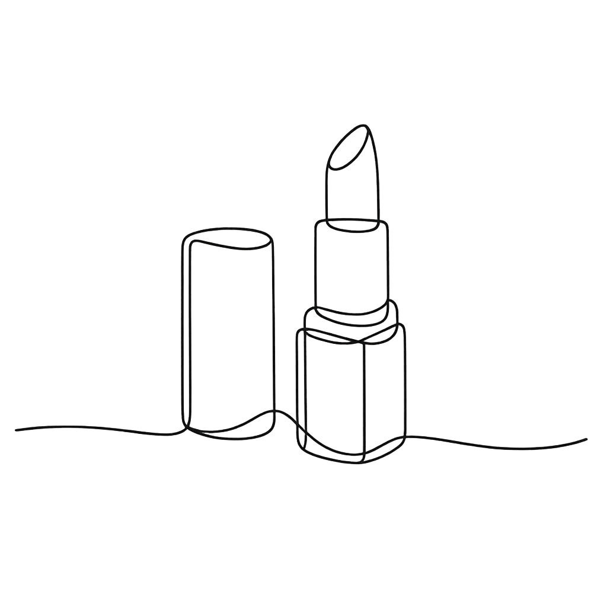
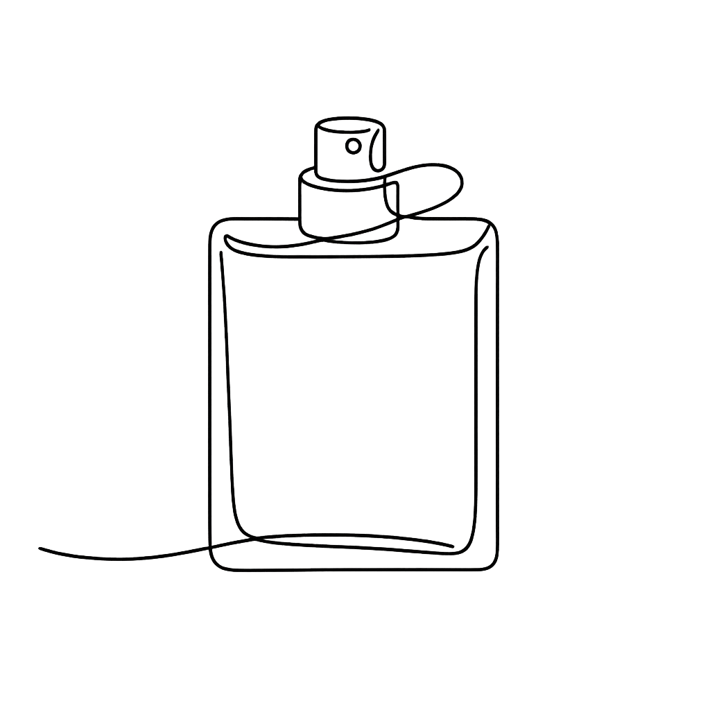
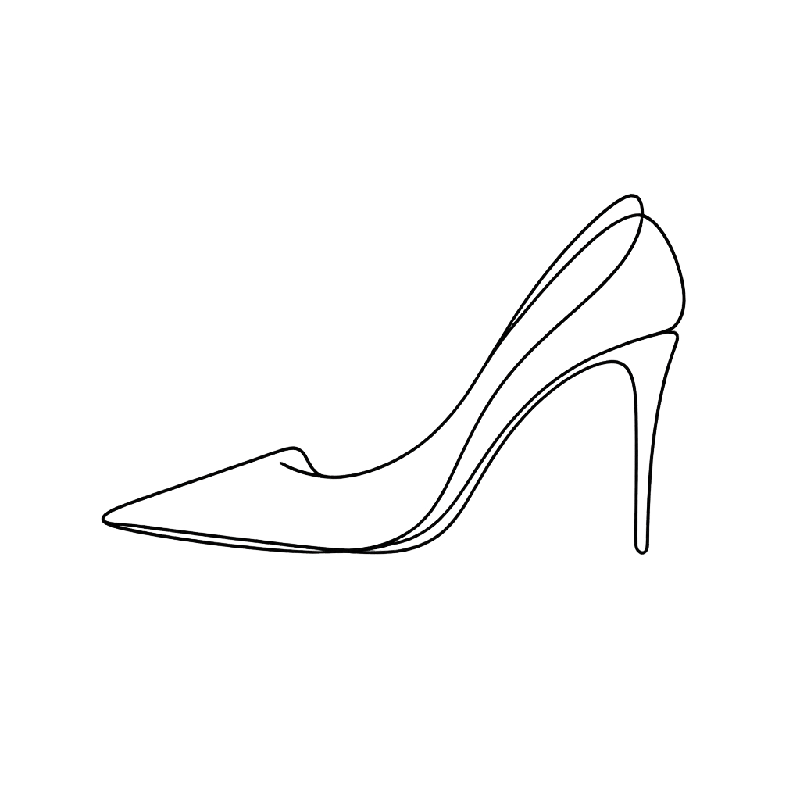
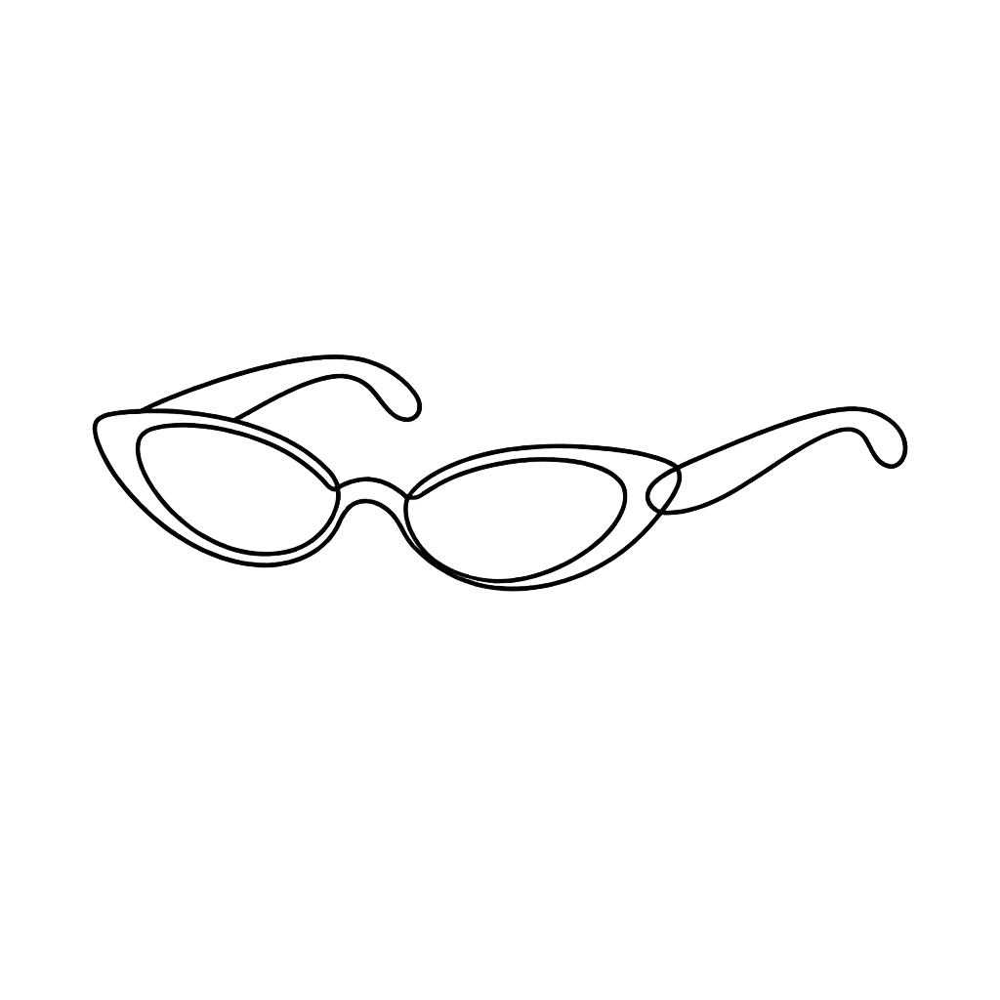

沪公网安备31010402010179号
沪ICP备2023003282号-38
沪公网安备31010402010179号
沪ICP备2023003282号-38






奢侈品行业正在经历深刻结构性调整：LVMH、Kering、Richemont三大巨头同时收缩战线，重新审视品牌组合与门店网络；Nike在中国市场被安踏等本土品牌夺走份额，执行力差距暴露无遗；与此同时，Courreges任命新艺术总监、Prada集团逆势增长5%，说明品牌力与差异化战略仍是穿越周期的核心能力。
The luxury industry is undergoing profound structural adjustment: LVMH, Kering and Richemont are simultaneously scaling back, re-examining brand portfolios and store networks; Nike is losing ground in China to local brands like Anta, revealing execution gaps; meanwhile Courreges appoints a new artistic director and Prada Group grows 5%, showing that brand power and differentiation remain core to navigating cycles.
要点：Pixel Moda为全球900多个品牌提供AI生成与AI辅助的内容制作，年产量达1400万张图片和视频；BoF与麦肯锡联合研究显示，生成式AI未来5年将为时尚行业带来超过30%的生产率提升。
Key Points: Pixel Moda produces AI-generated content for 900+ global brands, delivering 14 million pictures and videos per year; BoF and McKinsey research shows generative AI will unlock 30%+ productivity gains in fashion over the next 5 years.
洞察：AI在时尚电商领域落地的关键不是"取代人类"，而是"放大人类创意"。Pixel Moda的"人类主导"模式证明了这一点——AI处理效率，人类把控品牌调性，这才是最可持续的AI应用路径。
Insight: The key to AI in fashion e-commerce is not replacing humans but amplifying human creativity. Pixel Moda human-led model proves this — AI handles efficiency, humans control brand identity. This is the most sustainable AI application path.
要点：Drew Henry毕业于中央圣马丁，曾在Phoebe Philo时期的Celine、J.W. Anderson、Burberry担任重要角色，并深度参与Philo同名品牌的发布；接替Nicolas Di Felice，后者5年任期内成功复兴了Courreges标志性的"太空时代DNA"。
Key Points: Drew Henry, a Central Saint Martins graduate, held key roles at Celine under Phoebe Philo, J.W. Anderson and Burberry, and was instrumental in launching Philo own label; succeeds Nicolas Di Felice who revitalized Courreges signature Space Age DNA over 5 years.
洞察：Courreges选择Henry反映了一个趋势：品牌倾向于选择"有成功经验"的改造者而非颠覆性新秀。这对当下动荡的奢侈品牌格局有重要启示——在市场不确定性增加时，可预测的变革路径比大胆押注更受青睐。
Insight: Courreges choice of Henry reflects a trend: brands prefer transformative leaders with proven track records over disruptive newcomers. In times of market uncertainty, predictable transformation paths are favored over bold bets.
要点：Prada 2026春夏广告由艺术家Jordan Wolfson主导，AI仅用于后期制作；品牌代表强调AI仅是工具，非创作概念本身；艺术史视角认为这与沃霍尔等艺术家拥抱新技术并无不同。
Key Points: Prada SS2026 campaign was led by artist Jordan Wolfson with AI used only in post-production; brand representatives emphasize AI as a tool not the creative concept; art history perspective sees this as no different from artists like Warhol embracing new technology.
洞察：奢侈品行业对AI的矛盾态度揭示了一个更深层的焦虑：品牌真实性（brand authenticity）。当"手工"、"稀缺"、"排他"是奢侈品核心价值时，AI的"规模化"本质与之一开始就是冲突的。这场争议短期内不会平息。
Insight: The luxury industry contradictory attitude toward AI reveals a deeper anxiety: brand authenticity. When handcraft, scarcity and exclusivity are luxury core values, AI scalability inherently conflicts. This debate will not be resolved soon.
要点：LVMH、Kering和Richemont三大集团在需求低迷的压力下，同时重新审视品牌组合、组织架构和门店网络；LVMH董事长Bernard Arnault、Kering CEO Luca de Meo等高管亲自推动重组。
Key Points: LVMH, Kering and Richemont, under pressure from demand slump, are simultaneously re-examining brand portfolios, organizational structures and store networks; executives including LVMH chairman Bernard Arnault and Kering CEO Luca de Meo are personally driving restructuring.
洞察：三大巨头同时收缩战线，是奢侈品行业自2022年高点以来泡沫出清的标志性事件。当扩张红利消失，精简将成为新常态——这对中国本土高端品牌是机会还是威胁，取决于谁能在品牌力上率先突破。
Insight: The three giants simultaneously scaling back is a landmark event in luxury foam cleanup since the 2022 peak. When expansion dividends disappear, simplification becomes the new normal — opportunity or threat for Chinese domestic premium brands depends on who breaks through in brand power first.
要点：Prada集团2025年全年营收增长5%，Miu Miu继续跑赢大盘；Versace收购已完成交割，成为集团旗下品牌组合的重要组成部分；在奢侈品行业整体低迷的背景下，Prada是少数实现正增长的品牌之一。
Key Points: Prada Group full-year 2025 revenue grew 5%, with Miu Miu continuing to outperform; Versace acquisition completed and integrated into group portfolio; Prada is one of the few luxury brands achieving positive growth amid overall industry downturn.
洞察：Prada的逆势增长印证了"品牌力=抗周期"的核心逻辑。Miu Miu的成功在于精准的"文化定位+克制扩张"战略——不追求规模最大化，而是追求品牌溢价最大化。在行业整体收缩时，这种战略定力反而成为最大的竞争优势。
Insight: Prada counter-trend growth confirms the core logic that brand power equals cycle resistance. Miu Miu success stems from precise cultural positioning plus disciplined expansion — not maximizing scale but maximizing brand premium. In overall industry contraction, this strategic focus becomes the biggest competitive advantage.
要点：Dio新任创意总监推出的Burgeon系列获得市场热烈反响，推动品牌势能在2026年持续上升；系列设计融合经典与现代美学，重新定义了品牌当代语境下的叙事语言。
Key Points: Dio new creative director Burgeon collection received enthusiastic market response, driving brand momentum in 2026; series design fuses classic and modern aesthetics, redefining brand contemporary narrative language.
洞察：Dio的复兴路径为其他处于转型期的奢侈品牌提供了可参考的范本：不是颠覆传统，而是以当代语言重新激活品牌遗产。在消费者越来越重视文化深度的当下，这一策略正在被证明是有效的。
Insight: Dio revival path provides a referable template for other luxury brands in transition: not disrupting heritage but reactivating it with contemporary language. As consumers increasingly value cultural depth, this strategy is proving effective.
Key Points: Prada co-founder Patrizio Bertelli and Miuccia Prada family net worth rebounded sharply in 2025, exceeding $7 billion combined; Miu Miu explosive growth was the main driver, with group total market cap hitting a record high.
洞察：Prada家族的财富反弹是中国高端消费复苏的重要信号。Miu Miu通过精准的"文化精英"定位，在年轻消费者中建立了强大的品牌忠诚度——这与LVMH们的大众奢侈品路线形成了鲜明对比。
Insight: Prada family wealth rebound is an important signal of Chinese premium consumption recovery. Miu Miu built strong brand loyalty among young consumers through precise cultural-elite positioning — a sharp contrast to LVMH mass luxury route.
要点：德国奢侈品牌AIGNER与美最时（Metro Brands）达成战略合作，加速拓展中国大陆渠道；AIGNER创立于1966年，以皮具和配饰著称，此前在中国的布局相对有限。
Key Points: German luxury brand AIGNER partnered with Metro Brands to accelerate China mainland channel expansion; AIGNER founded in 1966, known for leather goods and accessories, previously had limited China presence.
洞察：国际二线奢侈品牌正在中国寻找增量市场。AIGNER的进入表明，中国三四线城市的奢侈品消费潜力仍在被低估。与其在一线城市与头部品牌正面竞争，这些品牌选择了差异化渗透的路径。
Insight: International second-tier luxury brands are finding incremental markets in China. AIGNER entry shows that luxury consumption potential in China tier-3 and tier-4 cities remains underestimated. Rather than competing head-on with top brands in tier-1 cities, these brands chose differentiated penetration routes.
要点：美国大众时尚品牌Guess宣布关闭中国市场所有门店，标志着又一个大举进攻后又全面撤退的国际时尚品牌；此前Forever 21、New Look、Old Navy等品牌已相继退出中国。
Key Points: American mass fashion brand Guess announced closing all China stores, marking another international fashion brand executing full retreat after initial expansion; previously Forever 21, New Look, Old Navy have exited China.
洞察：Guess的撤退再次证明：中国大众时尚市场的窗口期已经关闭。本土品牌在性价比、供应链速度和电商运营上的优势，使得国际大众品牌几乎无法维持竞争力。这对奢侈品市场也有警示意义——即便是高端定位，也必须本土化运营才能生存。
Insight: Guess retreat once again proves the window for China mass fashion market has closed. Domestic brands advantages in price-performance, supply chain speed and e-commerce operations make it nearly impossible for international mass brands to maintain competitiveness. Even for luxury, localization is now essential for survival.
要点：SKP宣布在华南地区开设首店，选址于经济活跃的新一线城市；此前SKP已在武汉、成都等城市成功开店，高端百货模式向全国扩展的趋势明显。
Key Points: SKP announced its first store in South China, located in an economically active new tier-1 city; after successful stores in Wuhan and Chengdu, the high-end department store model expansion nationwide is accelerating.
洞察：SKP的扩张路径折射出中国消费梯度的演变：当一线城市奢侈品消费趋于饱和，新一线城市和强二线城市正在成为新的增长引擎。高端百货的本地化运营模式（而非简单移植一线城市经验），是成功的关键。
Insight: SKP expansion path reflects evolution of China consumption gradient: as tier-1 city luxury consumption saturates, new tier-1 and strong tier-2 cities are becoming new growth engines. High-end department store localized operation model is key to success.
沪公网安备31010402010179号
沪ICP备2023003282号-38